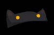
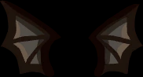
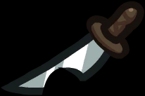
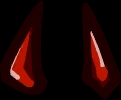
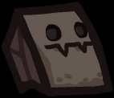
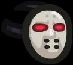
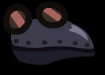
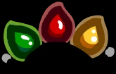

News
Updates about the Bugdate | Dev Log Lobby
Hey Crewmates! Alright so I definitely missed doing an April dev log completely. Shh. Don’t tell anyone. I was busy cleaning out the vents. This one is a shorter dev log as we prepare for our big bug crunch and quality of life update. As I mentioned in the previous post, this next update isn’t…
Among Us Crewmates are jumping in NEW STATE MOBILE!
Crewmates! We’re thrilled to announce that our Among Us beans will be appearing in NEW STATE MOBILE as part of their latest update. From April 21 through May 19, NEW STATE MOBILE players will be able to embrace their inner Impostor through an Among Us-themed mini game, a suite of new in-game items, newly added…
Among Us Horse Mode – April Fools 2022
Hi Horsemates! One year ago, we asked: And this year for April Fools, we no longer need to ask “what if?” Now we can say: “Ha ha wait OH NO STOP.” Among Us Horse Mode is live NOW! That’s right – for one day only as part of our April Fools celebration, we are launching…
Announcing: Among Us x Ratchet & Clank Cosmetics!
Crewmates! Our collaboration with Ratchet & Clank is here! Explore space, vent, and call out suspicious activity in all new Ratchet & Clank cosmetics. It was so cool to have worked with Insomniac Games to bring you these official cosmetics for free, and as an exclusive to all our PlayStation players – make sure you’re…
Announcing: Among Us x SCREAM Cosmetics!
Crewmates! Our collaboration with SCREAM is here! Call emergency meetings, sabotage, and run around doing tasks as Ghostface in our new v2022.3.29 update. It was so fun working with Paramount Pictures and Spyglass Media Group to bring you these official cosmetics for free – but act fast because they’ll only be available until April 30th!…
Events
Events are temporary updates implemented to celebrate some kind of holiday. Among Us has a total of three annual events so far:
April Fools
Among Us celebrates April Fools every year on April 1st. Prior to 2022, the textures and layout on The Skeld were reversed, and the map's name was changed to "ehT dlekS". In 2022, The Skeld layout was not reversed, but all the player sprites have become horse-like creatures.
April Fools - Overview
During April Fools, The Skeld's textures and layout became reversed. This caused the rooms that would normally appear on the left of the map to appear on the right and vice versa. The Skeld's textures' reversal also made it look like the ship was flying backward, confusing many players. According to Innersloth, April Fools "ehT dlekS" will be annual for 24 hours only on April 1 GMT in the future. However, on April 1st, 2022, The Skeld was not reversed. Instead, the player's character became a horse-like creature, which Innersloth calls "Horse Mode".
April Fools - Trivia
- The code that changes the appearance of The Skeld during April Fools is still within the data of Among Us. If the host's device's date is set to April 1, The Skeld will appear flipped for all players in the host's game, even if their devices' dates are not set to April 1.
- On ehT dlekS, Align Engine Output begins in Lower Engine and ends in Upper Engine.
- The task list does not reflect this, but instead shows that the task begins in Upper Engine.
- Opening the personal map correctly shows the location to do the task.
- On Nintendo Switch edition, the map icon of The Skeld is not reversed, though ehT dlekS will still be properly hosted in a lobby or loaded in Freeplay.
- All other maps are unaffected by April Fools.
- On ehT dlekS, Upload Data uses the old asset prior to version 2021.6.30.
- On ehT dlekS, Clean Vent is not present.
- There is a bug on ehT dlekS where vents will not function correctly, the arrow face to the left, can only move left and right (for example, Impostors and Engineers cannot use a vent to access Admin) and characters are unable to hop out.
- The whinny sound used during Horse Mode was voiced by Gary Porter.
Halloween
Halloween is a real-life holiday celebrated within Among Us every October. The first in-game celebration of Halloween was in 2019 and has since been a celebrated event. During Halloween, players have access to unique cosmetics, and maps are decorated with special objects such as ghosts, pumpkin lanterns, and more!
Halloween - Maps
From October 19 to October 31, The Skeld and MIRA HQ are decorated with cobwebs, spiders, bats, pumpkins, slime, and other spooky decorations. Polus and The Airship are not decorated during this time.
Halloween - Cosmetics
The Halloween event has a set of eleven exclusive hats and two visor cosmetics that players can keep after the event finishes. The cosmetics will be automatically added to the player's inventory upon logging in during October. Unlike the Christmas hats, mobile, PC and Nintendo Switch users all receive the cosmetics for free.
Hats
| Name | Image |
|---|---|
| Batbean |  |
| Batty |  |
| Chop-Chop |  |
| Imp-ressive |  |
| Mask, The Monster Mask |  |
Visor Cosmetics
| Great Goalie |  |
| Plagued |  |
Halloween - Trivia
- Players on all devices can obtain these hats at any time by changing their device's date to sometime in October.
- Changing the date back will not affect the hats.
- As of version 2021.11.9, there is a bug which prevents the hats from being obtainable in the update, but can be used if obtained beforehand.
Christmas
Christmas is a real-life holiday celebrated within Among Us every December. During Christmas, players can acquire a set of unique hats.
Hats
During Christmas, a special bundle of eight Christmas-themed hats is available for free on all platforms.
| Can'tdy Cane |  |
| Evergreen | |
| Frosted | |
| Gift Wrapped | |
| Lit Up |  |
Christmas - Trivia
- During Christmas 2018, Among Us was available for 40% off on PC.
- Players on PC can receive all the Christmas-exclusive hats by changing their devices' date to sometime in December. Changing the date back will not affect a player's hats.
- As of version 2021.11.9, there is a bug which prevents the hats from being obtainable in the update, but can be used if obtained beforehand.